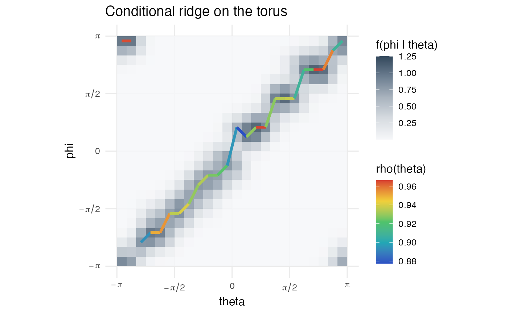

Plot a conditional toroidal ridge
Usage
plot_toroidal_ridge(
theta,
phi,
n_theta = 181,
n_phi = 181,
kappa_theta = 20,
kappa_phi = 20,
tie_tolerance = 0.01,
density_palette = c("#f6f7f9", "#d7dce1", "#aab4bf", "#6d7f91", "#33485c"),
rho_palette = ridge_palette(),
base_size = 12,
legend_position = "right",
show_legend = TRUE
)Arguments
- theta
First angle in radians.
- phi
Second angle in radians.
- n_theta
Number of theta grid points.
- n_phi
Number of phi grid points.
- kappa_theta
Kernel concentration for
theta.- kappa_phi
Kernel concentration for
phi.- tie_tolerance
Relative tolerance used to flag near-tied distinct local modes without changing the selected ridge.
- density_palette
Colour palette for the density background.
- rho_palette
Colour palette for local concentration.
- base_size
Base font size.
- legend_position
Legend position.
- show_legend
If
FALSE, hide legends.
See also
Other toroidal dependence plots:
plot_toroidal_flow(),
plot_toroidal_topography(),
plot_toroidal_topography_3d()
Examples
dat <- simulate_toroidal(n = 80, scenario = "diagonal", seed = 1)
plot_toroidal_ridge(dat$theta, dat$phi, n_theta = 24, n_phi = 24)
